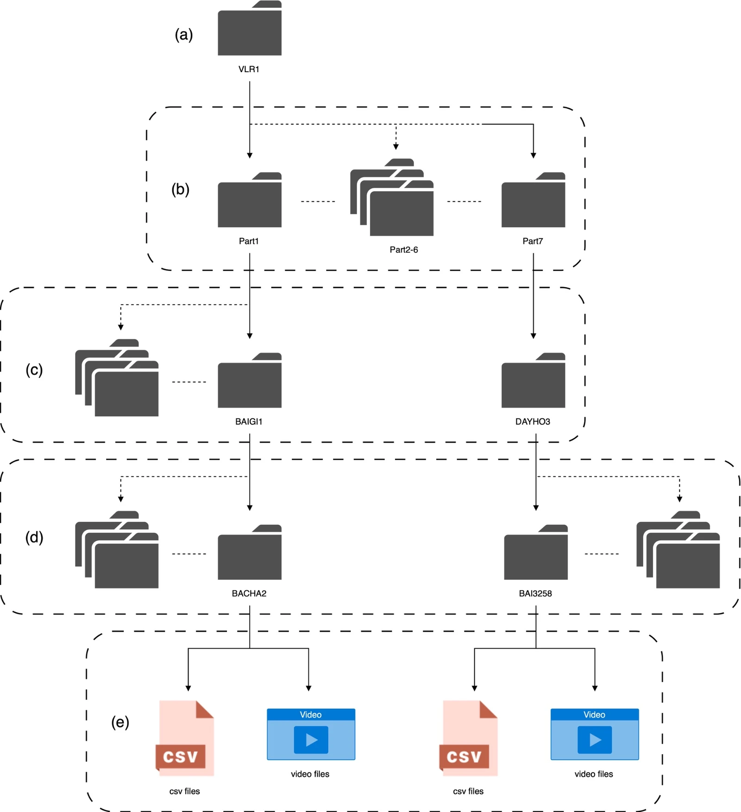
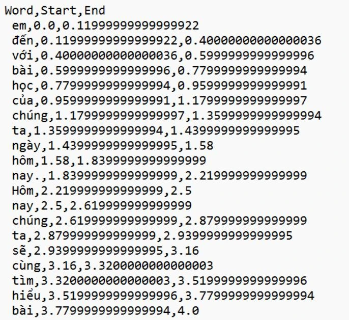
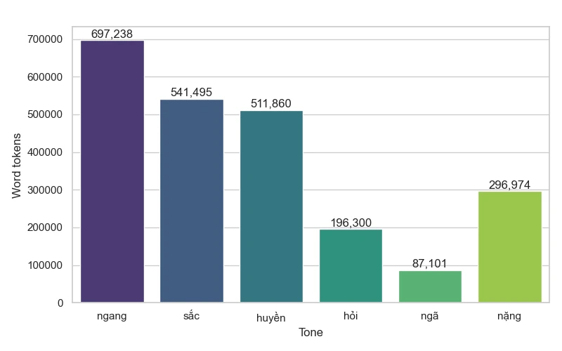
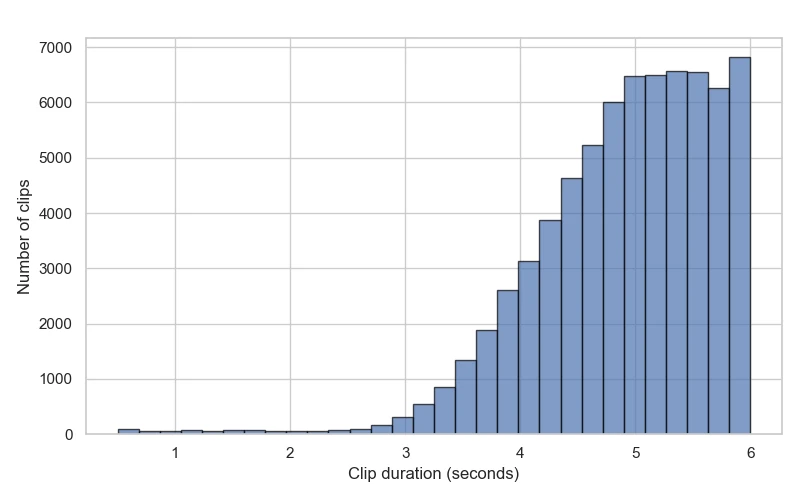
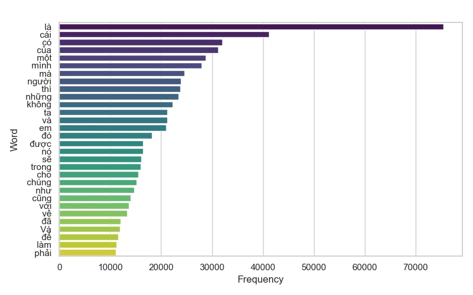
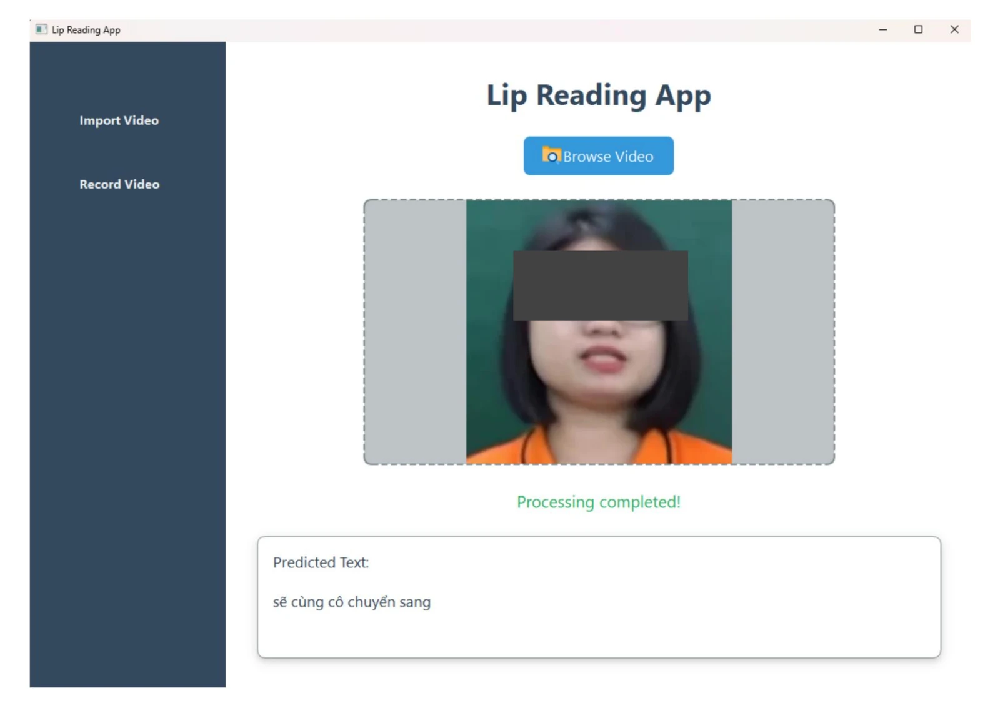
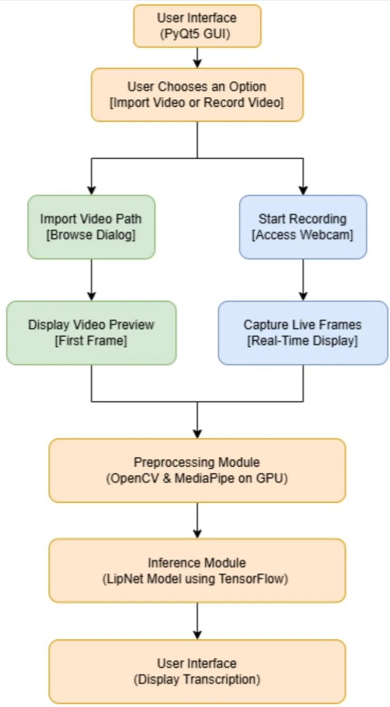

Aaron
AaronVietnamese lip reading
A dataset and visual speech recognition pipeline for Vietnamese
T. N. Quoc, N. P. T. Thao, N. N. G. Ninh, H. D. N. Quynh, V. T. Hoang, S. Bilik, M. Sindelar, J. Stefansky, R. Martinek, P. Bilik
FPT University · VSB – Technical University of Ostrava · Ho Chi Minh City Open University

Vietnamese has six tones, and many syllables that differ only in tone look almost the same on the lips. VLR is a large-scale Vietnamese lip-reading dataset with a refined pipeline that brings word error rate down to 29.5%.
Why it matters
Lip reading (visual speech recognition) turns lip, jaw and facial motion into text without audio. It can support deaf people and people who have lost their voice.
Vietnamese is hard for this task: it has six tones, and many syllables that differ only in tone look almost the same on the lips. Before VLR there was no large-scale Vietnamese lip-reading dataset.
The dataset
VLR is built from 1,794 videos in 25 public Vietnamese YouTube playlists, chosen for a clear view of the speaker and natural speech. Whisper transcribes the audio with word-level timestamps; MediaPipe finds the face and the lip region is cropped.
- About 116,000 clips, 198 hours of speech, 65.6 GB.
- 178 hours for training, 10 for validation, 10 for testing.
- Released on Zenodo under CC BY 4.0.

How the data is organised
The dataset is split into seven parts (PART1–PART7) for easier download. Each utterance has its own folder; each word in it has a silent video and a CSV file with the word’s start and end time.


Statistics
The level tone (no mark) is the most frequent and the tilde tone the least. Most clips last 4 to 6 seconds. The most common words are function words such as "là", "cái", "có", "của".



Results
Six visual-only lip-reading models were fine-tuned and evaluated on VLR. AV-HuBERT was best, with a word error rate (WER) of 62.18% under greedy decoding.
The team added four refinements: shallow fusion with a Vietnamese 5-gram language model, difficulty filtering with curriculum learning, lip-region alignment, and N-best re-ranking with a lightweight Transformer decoder. Together they bring test WER down to 29.5%.
| Model | Baseline WER | Refined WER |
|---|---|---|
| AV-HuBERT | 62.18% | 29.5% |
| Auto-AVSR | 69.88% | 36.9% |
| LipNet | 75.13% | 42.8% |
| VSP-LLM | 81.59% | 47.2% |
Demo application
The team built a desktop application to try lip reading outside the lab. The user picks a video or records one from a webcam. Frames are pre-processed with OpenCV and MediaPipe on the GPU, then a LipNet model (TensorFlow) predicts the sentence. The application runs on an NVIDIA Jetson Nano.


What I did
- Sourced and pre-processed video: segmentation, alignment, mouth-region extraction.
- Trained and evaluated VSP-LLM and Auto-AVSR baselines.
- Ran lightweight models on an NVIDIA Jetson Nano.
Citation
@article{quoc2026vlr,
title = {A Large-Scale Vietnamese Lip Reading Dataset and Enhanced Recognition Pipeline},
author = {Quoc, Trung Nguyen and Thao, Nguyen Pham Thi and Ninh, Nguyen Ngoc Gia and Quynh, Hoa Dam Nguyen and Hoang, Vinh Truong and Bilik, S. and Sindelar, Matej and Stefansky, J. and Martinek, R. and Bilik, P.},
journal = {Authorea Preprints},
year = {2026},
doi = {10.22541/au.177368999.91959735/v1}
}